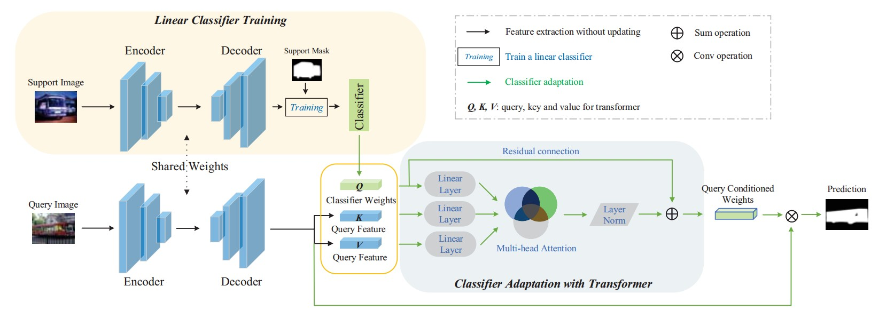
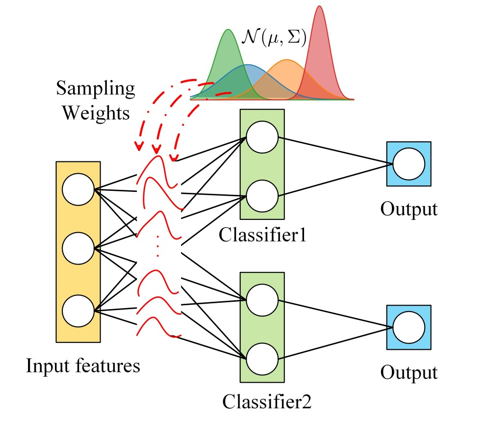
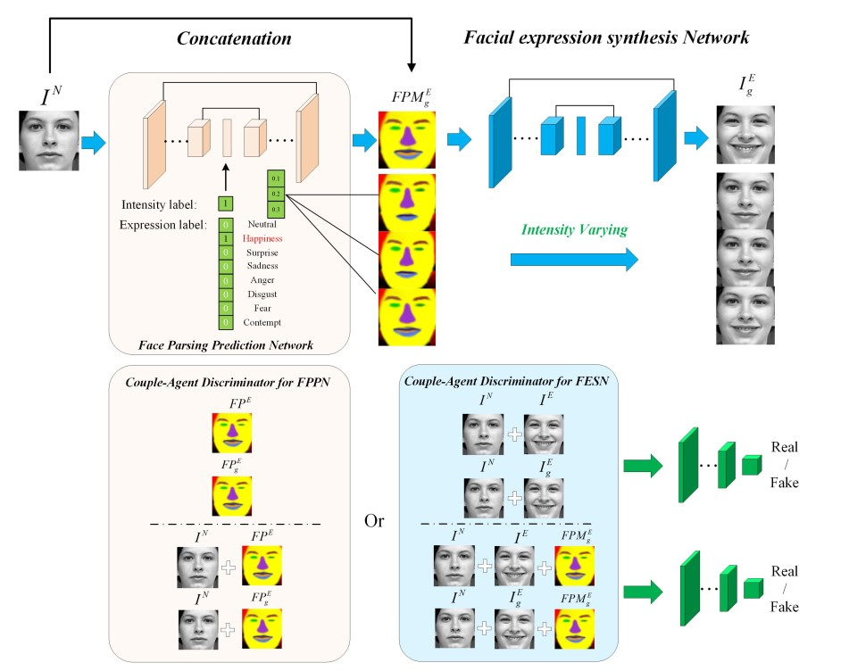
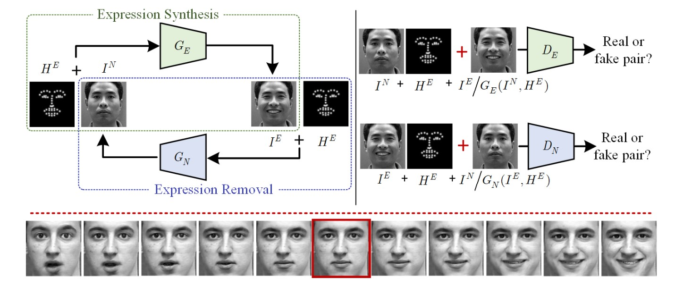
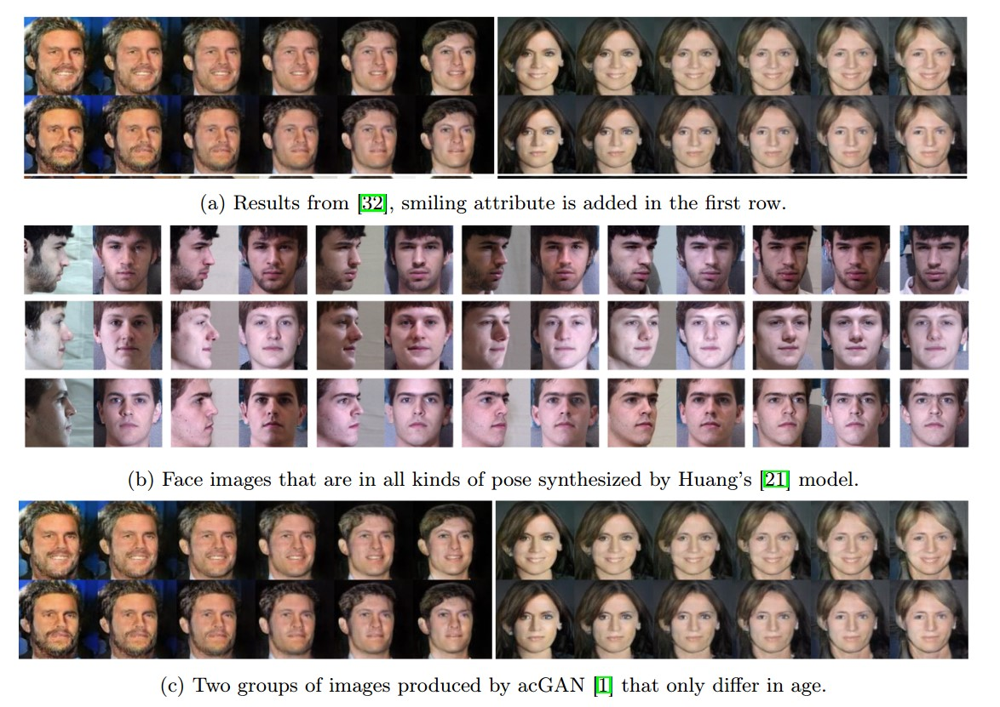

|
Zhihe Lu
Currently, I am a final-year PhD student at University of Surrey under the supervision of Prof.Tao Xiang and Prof.Yi-Zhe Song.
I finished my Master's degree at the Institute of Automation, Chinese Academy of Sciences, supervised by Prof.Ran He. My research interests are Domain Adaptation, Few-shot Learning and Generative Models.
Email /
CV /
Google Scholar /
Github
|
|
|

|
Simpler is Better: Few-shot Semantic Segmentation with Classifier Weight Transformer
Zhihe Lu,
Sen He,
Xiatian Zhu,
Li Zhang,
Yi-Zhe Song,
Tao Xiang
ICCV, 2021
code
A novel training pipeline for few-shot segmentation with classifier weight transformer.
|
|

|
Stochastic Classifiers for Unsupervised Domain Adaptation
Zhihe Lu,
Yongxin Yang,
Xiatian Zhu,
Cong Liu,
Yi-Zhe Song,
Tao Xiang
CVPR, 2020
code
A novel way to use infinite number of classifiers without extra parameters to detect the misaligned regions and then minimize the discrepancy.
|
|

|
Conditional Expression Synthesis with Face Parsing Transformation
Zhihe Lu,
Tanhao Hu,
Lingxiao Song,
Zhaoxiang Zhang,
Ran He
ACM MM, 2018
A Couple-Agent Face Parsing based Generative Adversarial Network (CAFP-GAN) that unites the knowledge of facial semantic regions and controllable expression signals.
|
|

|
Geometry Guided Adversarial Facial Expression Synthesis
Lingxiao Song,
Zhihe Lu
Ran He,
Zhenan Sun,
Tieniu Tan
ACM MM, 2018
A Geometry-Guided Generative Adversarial Network (G2-GAN) was proposed for photorealistic and identity-preserving facial expression synthesis, with facial geometry (fiducial points) as a controllable condition to guide facial texture synthesis with specific expression.
|
|

|
Recent Progress of Face Image Synthesis
Zhihe Lu,
Zhihang Li,
Jie Cao,
Ran He,
Zhenan Sun
ACPR, 2017
This was a very early survey for face image synthesis, which not only reviewed existing works, but also provided some promising directions for future research.
|
Thanks for Jon Barron's website sharing.
|
{kind=link}